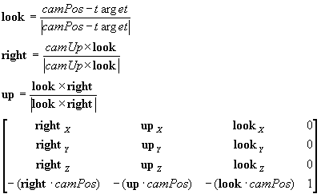

#include <nitro/fx/fx_mtx43.h>
void MTX_LookAt( const VecFx32 * camPos, const VecFx32 * camUp, const VecFx32 * target, MtxFx43 * mtx );
| camPos | カメラの位置ベクトルへのポインタ |
| camUp | カメラの上方向のベクトルへのポインタ |
| target | カメラの焦点へのポインタ |
| mtx | 4x3行列へのポインタ |
なし。
行列*mtxにカメラ行列をセットします。*camUpは正規化されている必要はありません。
セットされる行列は以下のとおりです。

Ver. 2004/06/21 初版